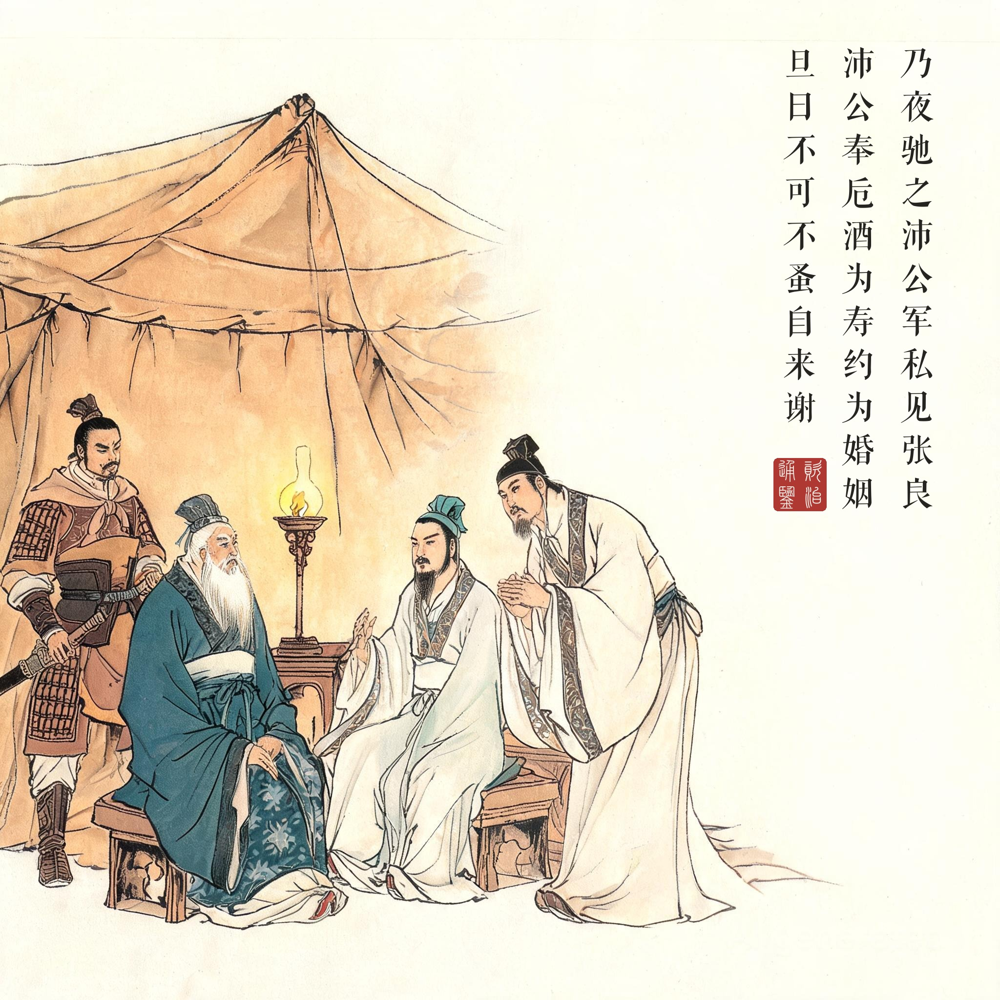
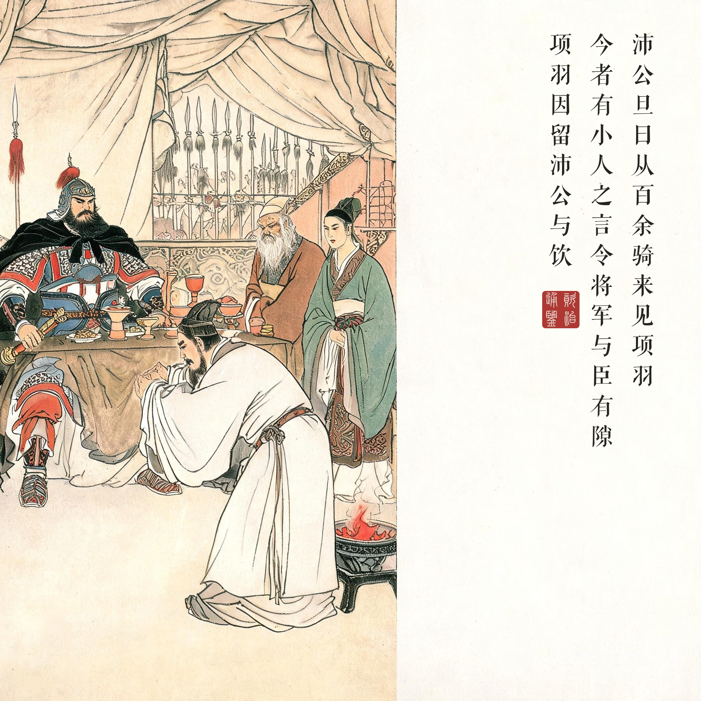
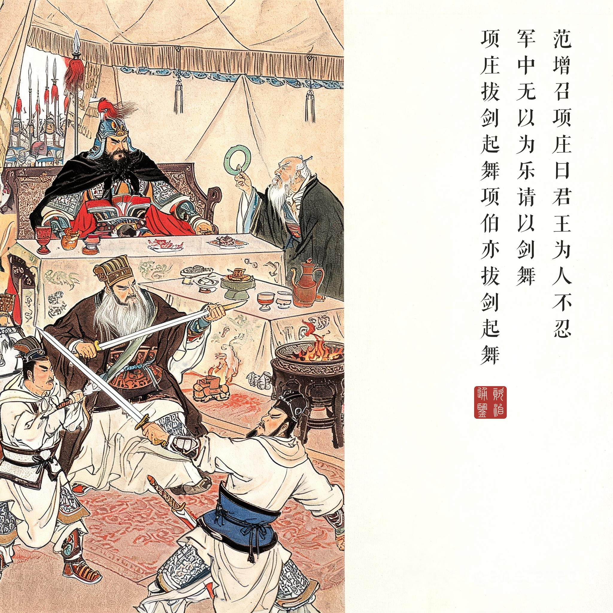
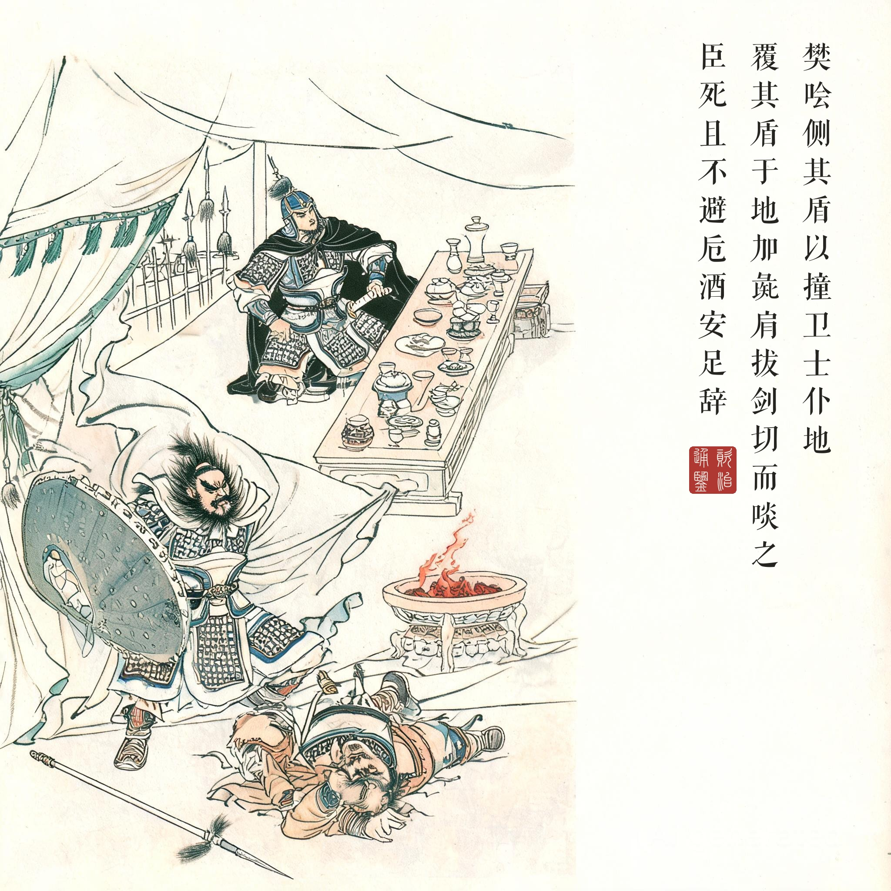
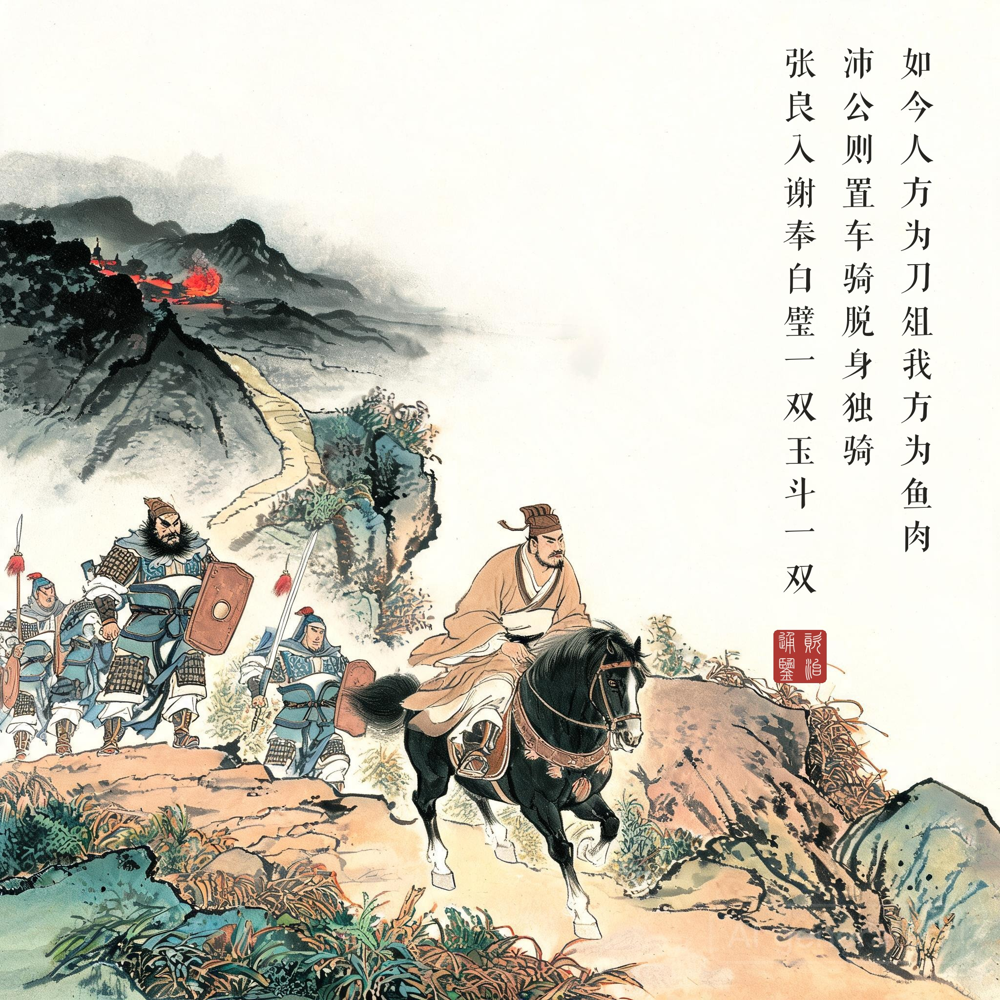

《资治通鉴 · 卷第九 · 汉纪一》太祖高皇帝上之上元年（公元前 206 年）
（据 daizhigev20《资治通鉴》底本节录；底本"百馀骑"之"馀"题款从今简体作"余"）
当是时，项羽兵四十万，号百万，在新丰鸿门；沛公兵十万，号二十万，在霸上。范增说项羽曰："沛公居山东时，贪财好色。今入关，财物无所取，妇女无所幸，此其志不在小。吾令人望其气，皆为龙虎，成五采，此天子气也。急击勿失！"
楚左尹项伯者，项羽季父也，素善张良，乃夜驰之沛公军，私见张良，具告以事，欲呼与俱去……良乃入，具告沛公。沛公大惊……沛公曰："君为我呼入，吾得兄事之。"张良出，固要项伯；项伯即入见沛公。沛公奉卮酒为寿，约为婚姻，曰："吾入关，秋毫不敢有所近，籍吏民，封府库而待将军……愿伯具言臣之不敢倍德也。"项伯许诺，谓沛公曰："旦日不可不蚤自来谢。"沛公曰："诺。"
沛公旦日从百余骑来见项羽鸿门，谢曰："臣与将军戮力而攻秦，将军战河北，臣战河南……今者有小人之言，令将军与臣有隙。"项羽因留沛公与饮。范增数目项羽，举所佩玉玦以示之者三，项羽默然不应。范增起，出，召项庄，谓曰："君王为人不忍。若入前为寿，寿毕，以剑舞，因击沛公于坐，杀之。不者，若属皆且为所虏！"庄则入为寿，寿毕，曰："军中无以为乐，请以剑舞。"项羽曰："诺。"项庄拔剑起舞。项伯亦拔剑起舞，常以身翼蔽沛公，庄不得击。
于是张良至军门见樊哙……哙曰："此迫矣，臣请入，与之同命！"哙即带剑拥盾入。军门卫士欲止不内，樊哙侧其盾以撞，卫士仆地。遂入，披帷立，瞋目视项羽，头发上指，目眦尽裂……则与斗卮酒。哙拜谢，起，立而饮之……则与一生彘肩。樊哙覆其盾于地，加彘肩其上，拔剑切而啖之……哙曰："臣死且不避，卮酒安足辞！夫秦有虎狼之心，杀人如不能举，刑人如恐不胜；天下皆叛之……劳苦而功高如此，未有封爵之赏，而听细人之说，欲诛有功之人，此亡秦之续耳，窃为将军不取也！"项羽未有以应，曰："坐！"
坐须臾，沛公起如厕，因招樊哙出……樊哙曰："如今人方为刀俎，我方为鱼肉，何辞为！"于是遂去。鸿门去霸上四十里，沛公则置车骑，脱身独骑；樊哙、夏侯婴、靳强、纪信等四人持剑、盾步走，从骊山下道芷阳，间行趣霸上。留张良使谢项羽，以白璧献羽，玉斗与亚父……沛公已去，间至军中，张良入谢曰："沛公不胜杯杓，不能辞，谨使臣良奉白璧一双，再拜献将军足下；玉斗一双，再拜奉亚父足下。"
这时项羽四十万大军驻新丰鸿门，刘邦十万驻霸上。范增劝项羽："刘邦在山东时贪财好色，如今入关，财物不取、妇女不近——志向不小。我让人望气，都是龙虎五彩，此天子气。快打，别错过！"
楚国左尹项伯是项羽的叔父，素与张良交好，连夜骑马到刘邦军营私见张良报信……张良转告刘邦，刘邦大惊，请项伯入内，捧酒祝寿，当场约为儿女亲家："我入关以来，秋毫不敢动，封存府库专等项将军——请您替我说，我绝不敢负德。"项伯应诺："明早务必亲自来谢罪。"
第二天刘邦带百余名骑兵到鸿门谢罪："我与将军并力攻秦……如今有小人挑拨，让将军与我生了嫌隙。"项羽于是留下刘邦饮酒。席间范增几次向项羽使眼色，举起佩玉玦示意三次，项羽默然不应。范增起身出去，唤来项庄："君王心软。你进去敬酒，完了请求舞剑助兴，趁机击杀沛公——不然，我们这些人都要做他的俘虏！"项庄入席敬酒，请求舞剑。项伯也拔剑起舞，时时用身体遮蔽刘邦，项庄无法下手。
张良到军门找樊哙："项庄舞剑，意在沛公！"樊哙说："危急了，我进去拼命！"带剑拥盾闯帐，卫士拦挡，他侧盾一撞，卫士扑倒在地。樊哙掀帷而立，瞪着项羽，头发上指，眼眶欲裂……项羽赏他大杯酒，他立而饮尽；又赏一条生猪腿，樊哙把盾牌反扣地上当砧板，拔剑切肉生啖。项羽问："还能喝吗？"樊哙说："臣死都不怕，一杯酒算什么！秦王有虎狼之心，杀人唯恐不多，天下人都反了他。怀王约定'先破秦入咸阳者王之'，如今沛公先入咸阳，分毫不敢沾，退军霸上专候将军——这样劳苦功高，不闻封赏，反而听小人之言要杀有功之人，这是走亡秦的老路啊！我私下以为将军不该这样！"项羽无言以对："坐。"
坐了片刻，刘邦借口如厕，招樊哙出来……樊哙说："人家是刀和砧板，我们是案上鱼肉，还告辞什么！"当即脱身：鸿门离霸上四十里，刘邦丢下车队，独自骑马，樊哙等四人持剑盾步行，从骊山取道芷阳抄小路直奔霸上。留张良善后，献白璧给项羽、玉斗给范增。张良等到刘邦确已回营，才进去致歉："沛公不胜酒力，不能亲自告辞，谨献白璧一双、玉斗一双。"
四十万对十万的酒局。鸿门宴的凶险在座次之外：范增的判断（"其志不在小"）、项伯的泄密（为友情也为亲家）、范增的三次举玦、项庄项伯的双剑、樊哙的盾、刘邦的"如厕"——每一环都是一次生死走位。司马光几乎照录《史记》，因为这段叙事已无可增删：中国语言里"项庄舞剑意在沛公""人为刀俎我为鱼肉""秋毫无犯"三个成语同出一宴。
项羽输在哪一步。不是输在心软——是输在"义"的自我人设被刘邦拿捏：刘邦的谢罪辞把"挑拨"归给"小人"，等于递给项羽一个不必杀他的台阶；项羽脱口而出"此沛公左司马曹无伤言之"，把内线卖了个干净。宴席散后刘邦回到军中第一件事——立诛曹无伤。两人对"信息"与"体面"的处理方式，已经预告了垓下。
读画小识。五幕按宴席时间轴展开：夜帐密语（暖光）→入帐谢罪（卑伏）→双剑对舞（僵持）→侧盾撞入（爆发）→夜奔小道（脱身）。第四幕樊哙覆盾切彘肩是全回的画眼：生肉、利刃、瞪裂的眼眶——项羽那句"壮士"是赞给对手的，也是宴席攻守易势的瞬间。